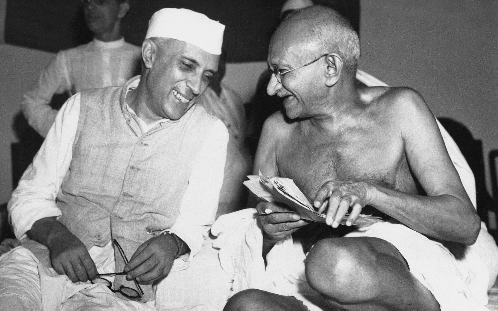

Jawaharlal Nehru
The story of the First Prime Minister of India

Mr.Nehru with Gandhi Ji
Jawaharlal Nehru as the first Prime Minister of independent India laid
the foundations of modern India. A man with modern scientific
understanding put India onto the path of modernization. His contribution
to building a strong India with democratic ethos cannot be denied by
anyone. Nehru carried the burden of a newly independent country on his
own shoulders and worked towards building a new India. He will always be
remembered for his leadership and farsightedness by generations to come.
Here is a timeline of Mr.Nehru's life.
-
The First Prime Minister of India Pandit Jawaharlal Nehru was born
on November 14, 1889 to Swaroop Rani and Motilal Nehru in
Pryagraj,India.
-
His primary education was at his home only where tutors came to his
house and took classes. At the age of 15 itself, Nehru went to
England for his schooling. At the age of 17, Nehru joined Cambridge
and completed his studies. After his return in 1912 Nehru directly
joined Indian politics.
-
Returning from England and joining politics was a turning point in
Nehru’s life. It was Gandhi who influenced and gave advice to Nehru
on how independence can be achieved. His first political engagement
was when he attended the Bankipore Congress in 1912. In 1919 he took
the charge of the secretary of the home rule league. Nehru’s
leadership quality became visible when he organized the first Kisan
March in Uttar Pradesh in 1920.
- Nehru's Contribution to indian independance:
-
Nehru joined the Home Rule Movement in 1916 and became the
secretary of Annie Besant’s Home Rule League.
-
He participated in the Non-Cooperation Movement in 1920 and led
the movement in the United Province. He was arrested in 1921 for
his anti- British activities.
-
Played an important role in the internationalization of the Indian
Struggle for Independence.
-
Nehru was elected as the president of the Congress party during
the Lahore session on 29 December 1929 and introduced a successful
resolution calling for Swaraj.
-
He was an important leader of the Civil Disobedience Movement in
1930 and was arrested for the same.
-
Played an important part in the Quit India Movement in 1939.
-
Guided the Independence movement during difficult times in 1940’s
world war two.
-
In India’s Political History Nehru’s role is inevitable. Returning
to India after his studies and till his death Nehru’s share in
building a complete New India is massive. His long-term vision about
the future of India has helped every government which came to power
later. It was Nehru who bought together the rulers and people.
Unlike today then the citizens of this country were the priority and
it was all because of Nehru. As Ramachandra Guha notes Nehru was the
connecting factor between the sovereign public and the middle class
on one side and India and rest of the world on the other side.
- Nehru's awards and achievements:
- First Prime Minister of India
- Bharat Ratna in 1955
- Built institutions such as IIT and AIIMS
- Laid the foundation of Heavy Industries such as HEC
- Foundation of Non-Aligned Movement
-
Nehru Ji left this world on May 27, 1964, at the age of 74. Nehru
will be always remembered in history as the bravest and
sophisticated maker of modern India.
"Life is like a game of cards. The hand you are dealt is determinism;
the way you play it is free will." -Jawaharlal Nehru
If you wish to find out more about Jawaharlal Nehru, please click
here